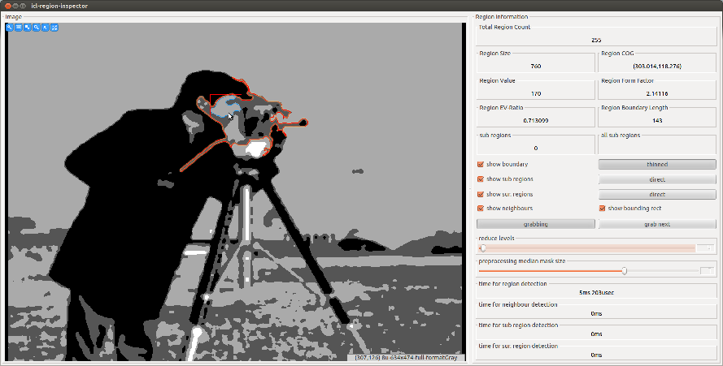

Computer Vision Algorithms¶
The ICLCV package contains classes and function that realize general computer vision algorithms, that are not assignable to one of the other packages. In general, these algorithms extract higher level information from images or they create new image representations, better suited for further processing steps. By definition, the ICLCV package does not include 3D computer vision algorithms, which are located in the ICLGeom package.
Table of Contents¶
Connected Component Analysis¶
Connected component analysis (CCA) or image region detection is one of the most common modules in computer vision. Given a single channel image, it finds connected sets of image pixels that share a common gray value. Usually, the CCA-result is a region label map, that contains the region-ID of each pixel. Even though this result representation is very common, ICL’s CCA implementation (cv::RegionDetector) does not even support it. Instead, we provides a much more efficient, compact and more intuitive to use representation, which is mirrored by the cv::ImageRegion class. Additionally, our internal algorithm works incredibly fast. On a common computer, medium fragmented images can usually be processed faster than any camera device can provide data and we did not even make use of SIMD-instructions or multi-threading. This is possible due to initially transforming the image using an efficient run-length-encoder, whose output is used for all further processing steps. In addition to the region detection also a region adjacency and containment graph can be created if necessary. This feature needs to be activated explicitly in the RegionDetector’s constructor as it slightly slows down the processing speed. If the region-graph was created, each ImageRegion can also be asked for it’s adjacent regions, it’s child regions and it’s parent region. More details to the algorithm are given in the cv::RegionDetector’s documentation. An step by step tutorial can be found in Fast Connected Component Analysis with the cv::RegionDetector.
The icl-region-inspector Application¶
The application icl-region-inspector is a very powerful tool for the demonstration of ICL’s region detection framework. It provides an interactive GUI-interface for the selection of computed and visualized region features.
The cv::ImageRegion class¶
The RegionDetector’s output is a single std::vector<cv::ImageRegion>, containing all image regions that match the given region-size and region-gray-value constraints. The ImageRegion is implemented as a proxy for the internally managed and hidden cv::ImageRegionData structure. Therefore, ImageRegion instances can cheaply be copied. For each instance, the wrapped data structure contains an internal representation of the image region. Additionally, it contains internal buffers for each supported feature, which are computed in a lazy manner. Only features that are requested are actually computed, and automatically memorized for future requests.
Curvature Scale Space Corner Detection¶
The set of features provided by the cv::ImageRegion class consists of very simple features, such as the regions center of gravity or its bounding box, up to highly complex features, such as local PCA information and curvature scale space based boundary approximation by polygons (see also cv::CornerDetectorCSS).
SURF Feature Detection¶
ICL provides two wrappers for external SURF-feature detection libraries.
- A libopensurf wrapper (cv::OpenSurfDetector)
- An OpenCV SURF feature detection wrapper (cv::OpenCVSurfDetector)
In addition, we provide a generic wrapper called cv::GenericSurfDetector, which provides a generic SURF-Feature detection and matching interface. The demo application icl-surf-detector-demo demonstrates how to use this class.
Simple Blob Searcher¶
The cv::SimpleBlobSearcher is a simple-to-use tool for color blob detection. Internally, it searches blobs within a given size range in a binarized color-distance map, computed for a set of given reference colors.
Flood Filling¶
Due to the high performance implementation of the RegionDetector, flood filling is only seldomly used at all. However, since it is a very general algorithm, ICL provides a generic template based implementation, cv::FloodFiller, that has a set of common read-to-use methods, but also a very general templated one. A demo application icl-flood-filler-demo is also provided.
Hough Line Detection¶
The Hough line detection algorithm is also a very common basic computer vision tool. It transfers edge pixels into 2D lookup-table, the hough line space, whose axes define possible image straigh line parameters (angle and distance to the image origin). Here, each original image pixel becomes a wave-shaped line. Finding lines is then a simple maximum search in the hough table. For more details, refer to the cv::HoughLineDetector documentation or take a look at the interactive demo application icl-hough-line-demo.
The Vector Tracker¶
Tracking things in images is complex task, that is usually closely connected to a detection framework. In gernaral, tracking allows for narrowing the search window for the detection if we assume a maximum speed of the object moving in the image space. However most of the time, also a fallback is needed for the case that the tracked object is lost, which can also be described by using a search window that has image size.
In situations, where several objects, each described by a feature vector, are to be tracked, we face an assignment problem:
- Which object instance in the current time step belongs to which object in the previous time step
- How can we particularly solve the problem if a new object enters the scene
- How can we particularly solve the problem if a new object leaves the scene
These issues are tackled by the cv::VectorTracker that is a generalization of the cv::PositionTracker class, which is restricted to 2D feature vectors. In both cases, the tracking problem is reformulated as a linear assignment problem, that can be solved optimally, w.r.t. a cost matrix derived from a given feature distance metrics by the Hungarian Method. If the available object-count differs from one frame to another, the internal cost-matrix is smartly extended in order to identify new objects and objects that were lost.
The Hungarian Algorithm¶
The Hungarian Method is implemented by the cv::HungarianAlgorithm class template. Usually this is used in the VectorTracker only.
Mean Shift Tracking¶
Mean-Shift based tracking is also a very common standard technique in computer vision. A kernel, initially centered at the last frame’s position estimate, is locally combined with the image pixels resulting in a position update for the kernel. This procedure is iterated a few time until convergence is reached. For the algorithm, a single channel image is used that has high pixel values where the object is. Usually an inverted color distance map is used here. There are several extensions that suggest certain choices of kernels, or feature images. Other extension generalize the mean shift algorithm for an automatic adaption of the kernel size (mean shift through scale space). By now, only the standard method is supported. A demo application called icl-mean-shift-demo is provided as well.
Template Matching and Tracking¶
Template matching is a basic image processing technique, where a usually small pattern image is searched in a larger image. For the matching the pattern is compared with the image once centered at each image pixel. The maximum of the resulting distance image defines the optimal match of the pattern. As distance metrics usually (normalized) cross-correlation is used.
Note
Since the template matching and tracking bases on normalized cross-correlation, for which right now, not C++-fallback implementation is available, the whole template tracking framework is only available in case of having Intel IPP support
Todo
Provide Fallback-Implementation for Cross-Correlation
Simple Matching¶
The header ICLCV/CV.h provides the cv::matchTemplate functions that can simply be used. An object oriented interface is provided with the cv::ViewBasedTemplateMatcher class. The corresponding demo application is named icl-template-matching-demo
Tracking¶
Since usually, naive matching is too slow and not robust enough in particular not in presence of more than marginal object rotations, a tracking framework is of great use. ICL provides with simple yet powerful implementation: the cv::TemplateTracker. This class uses a set of heuristics to
- use the existing detection technique for implementing tracking
- provide rotation invariance
Tracking is realized by using a locally centered search window of a custom definable size. For providing rotation invariance, the searched pattern image is pre-rotated from 0 to 360 degree using an adaptable step size. In each tracking step, the searched pattern is matched within search window for each available rotation within a given rotation-search window size. A coarse to fine search is present in the method and constructor interfaced, but not implemented yet.
A demo application will be provided soon.
Todo
implement a demo application for the cv::TemplateTracker developed with Eckard